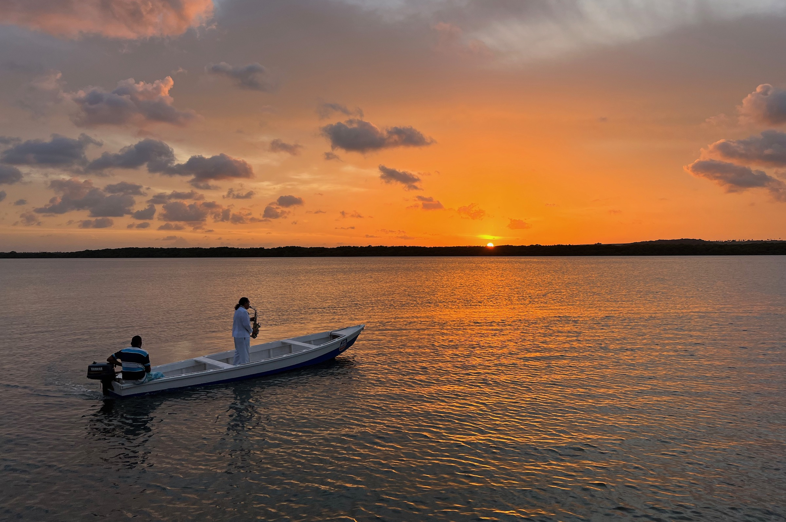
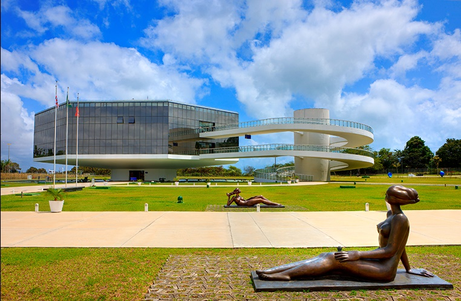
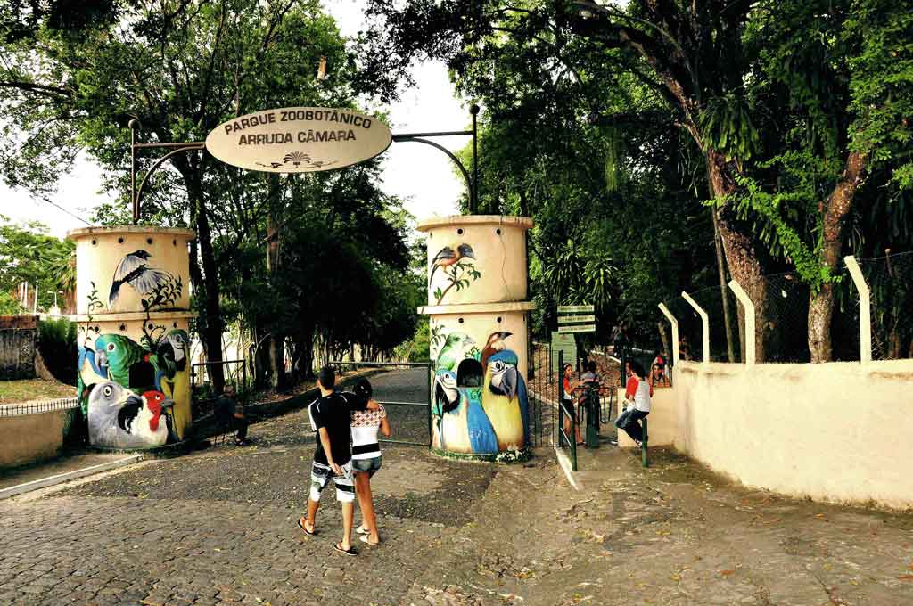
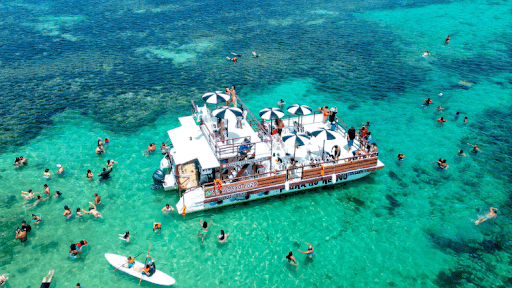

Praia do Jacaré
Pôr do sol embalado pelo Bolero de Ravel tocado ao vivo no Rio Paraíba.
Praias, mata atlântica e patrimônio histórico em um único destino.
Pontos turísticos mais frequentados:

Pôr do sol embalado pelo Bolero de Ravel tocado ao vivo no Rio Paraíba.

Ciência, cultura e artes em projeto assinado por Oscar Niemeyer.

A famosa Bica: mata atlântica, zoológico e trilhas em plena cidade.

O ponto mais oriental das Américas: o primeiro a receber o sol.